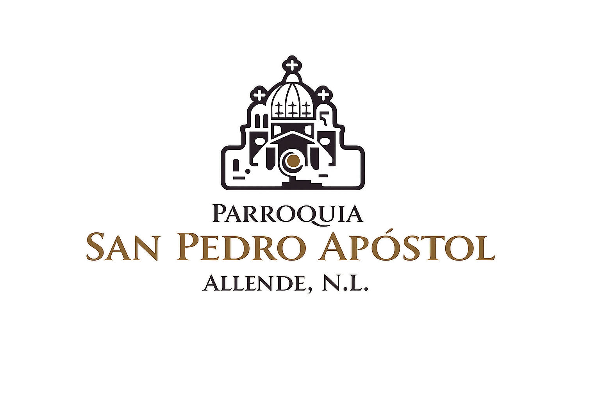

¡Cristo ha resucitado, Aleluya!

Estimados servidores y equipos de liturgia:
A lo largo de estos días, nuestra comunidad ha sido testigo del inmenso trabajo, logística y desgaste físico que han ofrecido para que el Triduo Pascual se desarrollara con dignidad. Existe un anhelo humano muy natural de querer que cada detalle salga perfecto, y es fácil caer en la trampa de medir el éxito de estos días sagrados únicamente por la precisión de las rúbricas.
Sin embargo, nos encontramos en una encrucijada vital. El verdadero culto no termina cuando se apagan las luces del templo o cuando la asamblea se retira. El altar no es un escenario, y ustedes no son simples organizadores de eventos. El placer bioquímico de cumplir con una lista de tareas jamás debe sustituir el gozo espiritual de nuestra fe.
Un amor mayor echa fuera a un amor menor. Hoy, en el Domingo de la Resurrección, las normas y las directrices dan paso a la misión. No importa cuán impecable haya sido la preparación; el verdadero fruto de este servicio ocurre cuando la liturgia rompe la cáscara de nuestro ego y nos impulsa a seguir amando a nuestros hermanos en la cotidianidad.
Jesucristo está vivo. La misión ahora es salir y anunciar con la vida lo que han servido en el altar. Gracias por sostener a esta parroquia con su entrega incondicional. Que la luz del Resucitado renueve sus fuerzas, pacifique sus corazones y bendiga abundantemente a sus familias.
Pbro. Arturo Flores
Párroco
Pbro. Alan Sánchez
Vicario Parroquial
10:00 AM, 12:00 PM y 7:00 PM
11:00 AM
Textos íntegros para la Misa del Día de Pascua.
Lectura del libro de los Hechos de los Apóstoles 10, 34. 37-43
Hemos comido y bebido con Cristo resucitado.
En aquellos días, Pedro tomó la palabra y dijo: "Ya saben ustedes lo sucedido en toda Judea, que tuvo principio en Galilea, después del bautismo predicado por Juan: cómo Dios ungió con el poder del Espíritu Santo a Jesús de Nazaret y cómo éste pasó haciendo el bien, sanando a todos los oprimidos por el diablo, porque Dios estaba con él.
Nosotros somos testigos de cuanto él hizo en Judea y en Jerusalén. Lo mataron colgándolo de la cruz, pero Dios lo resucitó al tercer día y concedió verlo, no a todo el pueblo, sino únicamente a los testigos que él, de antemano, había escogido: a nosotros, que hemos comido y bebido con él después de que resucitó de entre los muertos.
El nos mandó predicar al pueblo y dar testimonio de que Dios lo ha constituido juez de vivos y muertos. El testimonio de los profetas es unánime: que cuantos creen en él reciben, por su medio, el perdón de los pecados".
Palabra de Dios.
SALMO RESPONSORIAL (Salmo 117)
R. Este es el día del triunfo del Señor. Aleluya.
Te damos gracias, Señor, porque eres bueno, porque tu misericordia es eterna. Diga la casa de Israel: "Su misericordia es eterna". R.
La diestra del Señor es poderosa, la diestra del Señor es nuestro orgullo. No moriré, continuaré viviendo para contar lo que el Señor ha hecho. R.
La piedra que desecharon los constructores, es ahora la piedra angular. Esto es obra de la mano del Señor, es un milagro patente. R.
Colosenses o Corintios
OPCIÓN 1
Lectura de la carta del apóstol san Pablo a los colosenses 3, 1-4
Busquen los bienes del cielo, donde está Cristo.
Hermanos: Puesto que ustedes han resucitado con Cristo, busquen los bienes de arriba, donde está Cristo, sentado a la derecha de Dios. Pongan todo el corazón en los bienes del cielo, no en los de la tierra, porque han muerto y su vida está escondida con Cristo en Dios. Cuando se manifieste Cristo, vida de ustedes, entonces también ustedes se manifestarán gloriosos, juntamente con él.
Palabra de Dios.
OPCIÓN 2
Lectura de la primera carta del apóstol san Pablo a los corintios 5, 6-8
Tiren la antigua levadura, pues Cristo, nuestro cordero pascual, ha sido inmolado.
Hermanos: ¿No saben ustedes que un poco de levadura hace fermentar toda la masa? Tiren la antigua levadura, para que sean ustedes una masa nueva, ya que son pan sin levadura, pues Cristo, nuestro cordero pascual, ha sido inmolado.
Celebremos, pues, la fiesta de la Pascua, no con la antigua levadura, que es de vicio y maldad, sino con el pan sin levadura, que es de sinceridad y verdad.
Palabra de Dios.
Obligatoria
Ofrezcan los cristianos
ofrendas de alabanza
a gloria de la víctima
propicia de la Pascua.
Cordero sin pecado,
que a las ovejas salva,
a Dios y a los culpables
unió con nueva alianza.
Lucharon vida y muerte
en singular batalla,
y, muerto el que es la vida,
triunfante se levanta.
"¿Qué has visto de camino,
María, en la mañana?"
"A mi Señor glorioso,
la tumba abandonada,
los ángeles testigos,
sudarios y mortaja.
¡Resucitó de veras
mi amor y mi esperanza!
Venid a Galilea,
allí el Señor aguarda;
allí veréis los suyos
la gloria de la Pascua".
Primicia de los muertos,
sabemos por tu gracia
que estás resucitado;
la muerte en ti no manda.
Rey vencedor, apiádate
de la miseria humana
y da a tus fieles parte
en tu victoria santa.
Juan, Mateo o Lucas
ACLAMACIÓN ANTES DEL EVANGELIO
R. Aleluya, aleluya.
Cristo, nuestro cordero pascual, ha sido inmolado; celebremos, pues, la Pascua.
R. Aleluya.
OPCIÓN 1
Lectura del santo Evangelio según san Juan 20, 1-9
Él debía resucitar de entre los muertos.
El primer día después del sábado, estando todavía oscuro, fue María Magdalena al sepulcro y vio removida la piedra que lo cerraba. Echó a correr, llegó a la casa donde estaban Simón Pedro y el otro discípulo, a quien Jesús amaba, y les dijo: "Se han llevado del sepulcro al Señor y no sabemos dónde lo habrán puesto".
Salieron Pedro y el otro discípulo camino del sepulcro. Los dos iban corriendo juntos, pero el otro discípulo corrió más aprisa que Pedro y llegó primero al sepulcro, e inclinándose, miró los lienzos puestos en el suelo, pero no entró.
En eso llegó también Simón Pedro, que lo venía siguiendo, y entró en el sepulcro. Contempló los lienzos puestos en el suelo y el sudario, que había estado sobre la cabeza de Jesús, puesto no con los lienzos en el suelo, sino doblado en sitio aparte. Entonces entró también el otro discípulo, el que había llegado primero al sepulcro, y vio y creyó, porque hasta entonces no habían entendido las Escrituras, según las cuales Jesús debía resucitar de entre los muertos.
Palabra del Señor.
OPCIÓN 2
Lectura del santo Evangelio según san Mateo 28, 1-10
Ha resucitado e irá delante de ustedes a Galilea.
Transcurrido el sábado, al amanecer del primer día de la semana, María Magdalena y la otra María fueron a ver el sepulcro. De pronto se produjo un gran temblor, porque el ángel del Señor bajó del cielo y acercándose al sepulcro, hizo rodar la piedra que lo tapaba y se sentó encima de ella. Su rostro brillaba como el relámpago y sus vestiduras eran blancas como la nieve. Los guardias, atemorizados ante él, se pusieron a temblar y se quedaron como muertos. El ángel se dirigió a las mujeres y les dijo: "No teman. Ya sé que buscan a Jesús, el crucificado. No está aquí; ha resucitado, como lo había dicho. Vengan a ver el lugar donde lo habían puesto. Y ahora, vayan de prisa a decir a sus discípulos: ‘Ha resucitado de entre los muertos e irá delante de ustedes a Galilea; allá lo verán’. Eso es todo”.
Ellas se alejaron a toda prisa del sepulcro, y llenas de temor y de gran alegría, corrieron a dar la noticia a los discípulos. Pero de repente Jesús les salió al encuentro y las saludó. Ellas se le acercaron, le abrazaron los pies y lo adoraron. Entonces les dijo Jesús: “No tengan miedo. Vayan a decir a mis hermanos que se dirijan a Galilea. Allá me verán”.
Palabra del Señor.
OPCIÓN 3 (Misas Vespertinas)
Lectura del santo Evangelio según san Lucas 24, 13-35
Quédate con nosotros, porque ya es tarde.
El mismo día de la resurrección, iban dos de los discípulos hacia un pueblo llamado Emaús, situado a unos once kilómetros de Jerusalén, y comentaban todo lo que había sucedido.
Mientras conversaban y discutían, Jesús se les acercó y comenzó a caminar con ellos; pero los ojos de los dos discípulos estaban velados y no lo reconocieron. Él les preguntó: “¿De qué cosas vienen hablando, tan llenos de tristeza?”
Uno de ellos, llamado Cleofás, le respondió: “¿Eres tú el único forastero que no sabe lo que ha sucedido estos días en Jerusalén?” Él les preguntó: “¿Qué cosa?” Ellos le respondieron: “Lo de Jesús el nazareno, que era un profeta poderoso en obras y palabras, ante Dios y ante todo el pueblo. Cómo los sumos sacerdotes y nuestros jefes lo entregaron para que lo condenaran a muerte, y lo crucificaron. Nosotros esperábamos que él sería el libertador de Israel, y sin embargo, han pasado ya tres días desde que estas cosas sucedieron. Es cierto que algunas mujeres de nuestro grupo nos han desconcertado, pues fueron de madrugada al sepulcro, no encontraron el cuerpo y llegaron contando que se les habían aparecido unos ángeles, que les dijeron que estaba vivo. Algunos de nuestros compañeros fueron al sepulcro y hallaron todo como habían dicho las mujeres, pero a él no lo vieron”.
Entonces Jesús les dijo: “¡Qué insensatos son ustedes y qué duros de corazón para creer todo lo anunciado por los profetas! ¿Acaso no era necesario que el Mesías padeciera todo esto y así entrara en su gloria?” Y comenzando por Moisés y siguiendo con todos los profetas, les explicó todos los pasajes de la Escritura que se referían a él.
Ya cerca del pueblo a donde se dirigían, él hizo como que iba más lejos; pero ellos le insistieron, diciendo: “Quédate con nosotros, porque ya es tarde y pronto va a oscurecer”. Y entró para quedarse con ellos. Cuando estaban a la mesa, tomó un pan, pronunció la bendición, lo partió y se lo dio. Entonces se les abrieron los ojos y lo reconocieron, pero él se les desapareció. Y ellos se decían el uno al otro: “¡Con razón nuestro corazón ardía, mientras nos hablaba por el camino y nos explicaba las Escrituras!”
Se levantaron inmediatamente y regresaron a Jerusalén, donde encontraron reunidos a los Once con sus compañeros, los cuales les dijeron: “De veras ha resucitado el Señor y se le ha aparecido a Simón”. Entonces ellos contaron lo que les había pasado por el camino y cómo lo habían reconocido al partir el pan.
Palabra del Señor.